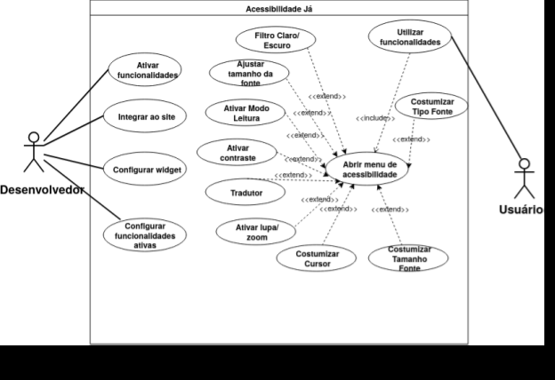
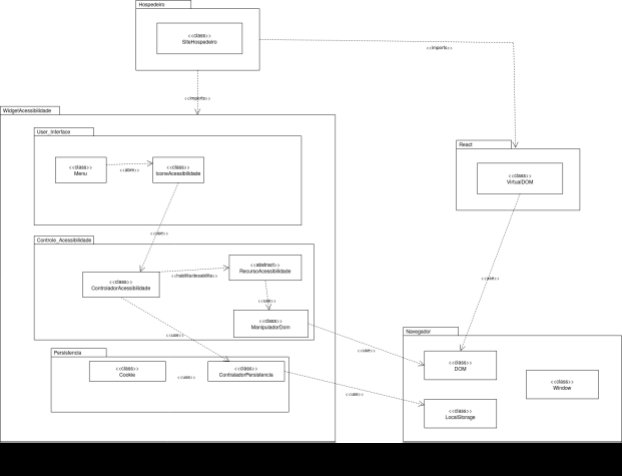
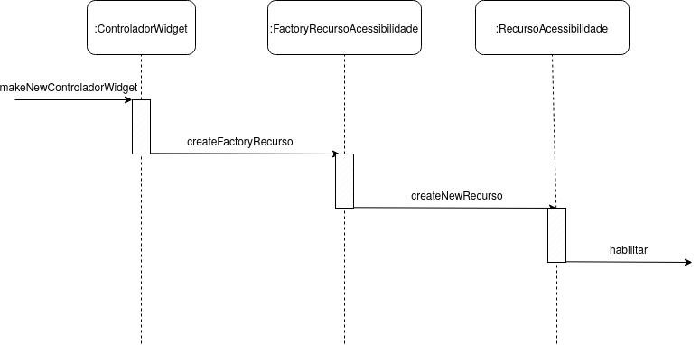

4.1. Documento de Arquitetura de Software (DAS)
Acessibilidade Já - Widget de Acessibilidade Web
📋 Sumário Executivo
O Acessibilidade Já é um widget de acessibilidade reutilizável, implementado em JavaScript vanilla, projetado para ser facilmente integrado em qualquer site moderno. O sistema foi desenvolvido seguindo princípios de Reutilização de Software e demonstra a aplicação prática de 5 padrões de projeto GoF (Gang of Four):
- Singleton: Garante inicialização única do widget
- Prototype: Define estrutura base para opções reutilizáveis
- Factory: Centraliza criação de ícones e elementos DOM
- Command: Encapsula ações permitindo undo/redo
- Decorator: Compõe efeitos de acessibilidade dinamicamente
O widget oferece 10 funcionalidades de acessibilidade distintas, sem dependências externas, com persistência de estado e API pública programática.
1. Introdução
1.1 Propósito
Este documento descreve a arquitetura do widget Acessibilidade Já, registrando os principais componentes, decisões arquiteturais, padrões de projeto aplicados e responsabilidades de cada módulo. O propósito é fornecer visão clara da estrutura interna para desenvolvedores que desejam entender, estender ou integrar o widget.
1.2 Escopo
O escopo deste DAS contempla: - ✓ Arquitetura do widget JavaScript standalone - ✓ Padrões de projeto implementados (GoF) - ✓ Fluxo de eventos e state management - ✓ Mecanismo de persistência de preferências - ✓ Integração com páginas hospedeiras - ✗ Backend completo (fora do escopo - widget é client-side) - ✗ Modelagem completa de banco de dados
1.3 Visões Arquiteturais
Este documento cobre as quatro visões do modelo 4+1 de Kruchten, tendo a Visão de Casos de Uso (o "+1", os cenários) como elemento integrador:
- Visão Lógica (Seção 2): Componentes internos, responsabilidades e padrões de projeto
- Visão de Implementação (Seção 3): Estrutura de arquivos, módulos e layers de código
- Visão de Processo (Seção 4): Modelo de execução em tempo de runtime — event loop, fluxos assíncronos e concorrência
- Visão de Implantação (Seção 5): Distribuição física dos artefatos pelos nós de execução (dispositivo, navegador, hospedagem e backend opcional)
O "+1" — a Visão de Casos de Uso — atravessa todas as demais e está materializada nos diagramas UML de apoio (casos de uso, pacotes e sequência) que ilustram visualmente a arquitetura — ver Seção 6.
2. Visão Lógica
A visão lógica descreve a decomposição interna do widget em componentes logicamente significativos e seus relacionamentos.
2.1 Componentes Principais
🔷 WidgetSingleton
- Responsabilidade: Garantir inicialização única do widget
- Mecanismo: Usa flag global
window.__AcessibilidadeJa__para evitar duplicatas - Padrão: Singleton
- Código de Proteção:
var WidgetSingleton = { isReady: function () { return !!window.__AcessibilidadeJa__; }, markReady: function () { window.__AcessibilidadeJa__ = true; }, }; if (WidgetSingleton.isReady()) return; // Sai se já carregado
Benefício: Previne duplicação de DOM, vazamento de memória e listeners duplicados
🔷 OptionPrototype
- Responsabilidade: Define estrutura base para opções de acessibilidade
- Padrão: Prototype
- Estrutura Base:
var OptionPrototype = { type: 'toggle', // Tipo de controle section: '', // Categoria (Visualização, Leitura, Navegação) key: '', // ID única (contrast-light, dyslexia, etc) icon: '', // Nome do ícone label: '', // Label para UI clone: function(props) { // Factory method para criar instâncias return Object.assign(Object.create(null), this, props || {}); } };
Instâncias: 10 opções criadas via OptionPrototype.clone({ ... })
| Key | Seção | Função |
|---|---|---|
contrast-light |
Visualização | Contraste claro (fundo branco) |
contrast-dark |
Visualização | Contraste escuro (fundo preto) |
grayscale |
Visualização | Escala de cinza (sem cores) |
highlight-links |
Visualização | Destaca todos os links |
reading-mode |
Leitura | Modo de leitura (fundo sépia) |
reading-guide |
Leitura | Guia de leitura (linha que segue mouse) |
dyslexia |
Leitura | Fonte OpenDyslexic para dislexia |
big-cursor |
Navegação | Cursor ampliado |
pause-anim |
Navegação | Pausa todas as animações CSS |
keyboard-nav |
Navegação | Navegação por teclado (Alt+K) |
🔷 IconFactory
- Responsabilidade: Centralizar criação de ícones SVG
- Padrão: Factory
- Benefício: Evita duplicação de código SVG; facilita manutenção e substituição de ícones
- Método:
var IconFactory = { _icons: { contrast_light: '<svg>...</svg>', contrast_dark: '<svg>...</svg>', // ... 11 mais }, create: function(name) { return this._icons[name] || ''; } }; // Uso: var svg = IconFactory.create('contrast_light');
🔷 WidgetElementFactory
- Responsabilidade: Criar elementos DOM do widget
- Padrão: Factory + Builder
- Elementos Produzidos:
createRoot()- Container principal (#ajw-root)createFab()- Botão flutuante de acessocreatePanel()- Painel lateral com opçõescreateToggleButton(option)- Botão toggle individualcreateZoomControl()- Controle de zoom com +/-createLanguageSelector()- Seletor de idiomacreateReadingExitBar()- Barra para sair do modo leituracreateGuide()- Elemento visual da guia de leituracreateSkipLink()- Link de skip para acessibilidade
Benefício: Encapsula detalhes de criação DOM; facilita testes e mudanças estruturais
🔷 Command Pattern - State Management
- Responsabilidade: Encapsular ações do usuário como objetos reutilizáveis
- Padrão: Command (GoF Behavioral)
- Objetivo: Permitir undo/redo, auditoria e histórico de ações
Tipos de Comando:
ToggleAccessibilityCommand
function ToggleAccessibilityCommand(key, state, root) {
this.key = key; // feature key (contrast-dark, etc)
this.state = state; // estado compartilhado
this.root = root; // elemento DOM raiz
this.previousValue = state.toggles[key]; // valor anterior (para undo)
}
ToggleAccessibilityCommand.prototype.execute = function() {
this.state.toggles[this.key] = !this.previousValue;
this._updateUI();
};
ToggleAccessibilityCommand.prototype.undo = function() {
this.state.toggles[this.key] = this.previousValue;
this._updateUI();
};
ZoomCommand - Ajusta zoom de texto (80-180%)
SetLanguageCommand - Muda idioma da página
SetReadingModeCommand - Ativa/desativa modo leitura
ResetCommand - Restaura estado padrão
KeyboardNavCommand - Ativa/desativa navegação por teclado
CommandInvoker (Manager)
function CommandInvoker() {
this.history = []; // Max 50 comandos
this.index = -1;
}
CommandInvoker.prototype.execute = function(cmd) {
cmd.execute();
this.history = this.history.slice(0, this.index + 1);
this.history.push(cmd);
this.index++;
if (this.history.length > 50) {
this.history.shift();
this.index--;
}
};
CommandInvoker.prototype.undo = function() {
if (this.index >= 0) {
this.history[this.index].undo();
this.index--;
}
};
CommandInvoker.prototype.redo = function() {
if (this.index < this.history.length - 1) {
this.index++;
this.history[this.index].execute();
}
};
Benefício: Desacopla lógica de ação da execução; permite múltiplas ações com undo/redo automático
🔷 Decorator Pattern - Effect Chain
- Responsabilidade: Compor efeitos de acessibilidade dinamicamente
- Padrão: Decorator (GoF Structural)
- Problema Resolvido: Como adicionar responsabilidades sem heranças complexas?
Arquitetura da Cadeia:
BaseAccessibilityEffect
↓ (wraps)
CssClassEffectDecorator (contrast, grayscale, etc)
↓ (wraps)
ZoomEffectDecorator (text zoom)
↓ (wraps)
ReadingGuideEffectDecorator (reading guide line)
↓ (wraps)
ReadingExitEffectDecorator (exit bar)
↓ (wraps)
TranslatorEffectDecorator (Google Translate)
↓ (wraps)
PersistenceEffectDecorator (localStorage)
Base Component:
function BaseAccessibilityEffect(options) {
this.options = options;
}
BaseAccessibilityEffect.prototype.apply = function(context) {
// Limpar todos os efeitos anteriores
this.options.forEach(function(opt) {
context.html.classList.remove('ajw-' + opt.key);
});
context.html.style.fontSize = '';
};
Decorator Base:
function AccessibilityEffectDecorator(component) {
this.component = component; // Componente envolvido
}
AccessibilityEffectDecorator.prototype.apply = function(context) {
this.component.apply(context); // Chamar wrapped primeiro
// Adicionar responsabilidade própria (override em subclass)
};
Concreto - CSS Class Decorator:
function CssClassEffectDecorator(component, key) {
AccessibilityEffectDecorator.call(this, component);
this.key = key;
}
CssClassEffectDecorator.prototype.apply = function(context) {
// Chamar chain anterior
AccessibilityEffectDecorator.prototype.apply.call(this, context);
// Adicionar classe CSS
context.html.classList.add('ajw-' + this.key);
};
Benefício: Sem herança complexa; efeitos podem ser ativados/desativados independentemente; ordem de aplicação clara
🔷 WidgetBuilder
- Responsabilidade: Montar o widget em etapas encadeadas
- Padrão: Builder (GoF Creational)
- API Fluida:
new WidgetBuilder(root, state, domFacade, invoker) .createStyles() .createRootElements() .createFab() .createPanel() .createZoomControl() .createLanguageSelector() .createSkipLink() .attachEventListeners() .applyInitialState() .build(); // Retorna instância montada
Benefício: Construção clara, testável e configurável de estrutura complexa
🔷 createDomFacade()
- Responsabilidade: Encapsular operações complexas de DOM
- Padrão: Facade (GoF Structural)
- Operações Encapsuladas:
- Gerenciamento de foco
- Trap de foco dentro do painel
- Atalhos de teclado (Alt+K, Escape)
- Navegação por setas
- Operações de classe/atributo
- Detecção de elementos focáveis
createDomFacade(root, panel, invoker)
.focusFirstElement()
.createKeyboardShortcut('Alt+K', openWidget)
.createKeyboardShortcut('Escape', closeWidget)
.createArrowNavigation()
.trapFocus()
Benefício: Esconde complexidade de manipulação de DOM; fornece interface simples
2.2 Estado Compartilhado (State Object)
var state = {
toggles: { // Booleanos para cada feature
'contrast-light': false,
'contrast-dark': false,
'dyslexia': false,
// ... 7 mais
},
zoom: 100, // Tamanho da fonte (80-180)
lang: 'pt-BR', // Idioma atual
_appliedLang: null, // Controle de cache de tradução
};
Persistence: Automaticamente serializado para localStorage via PersistenceEffectDecorator
3. Visão de Implementação
A visão de implementação relaciona a arquitetura lógica com os arquivos reais do projeto.
3.1 Estrutura de Arquivos
2026.01-T02_G4_AcessibilidadeJa_Entrega_04/
│
├── projetocomgofs/ # Demo e documentação
│ ├── public/widget/
│ │ ├── acessibilidadeja.js ⭐ WIDGET PRINCIPAL (1400+ linhas)
│ │ ├── decorator-pattern.js # Documentação do padrão Decorator
│ │ └── strategy-pattern.js # Documentação do padrão Strategy
│ │
│ ├── js/
│ │ └── site.js # Controller da demo
│ │
│ ├── css/
│ │ └── styles.css # Estilos da demo
│ │
│ ├── index.html # Página inicial
│ ├── recursos.html # Showcase de features
│ ├── integrar.html # Guia de integração
│ └── vite.config.js # Build config
│
├── pages/ # Backend Next.js
│ ├── api/v1/
│ │ ├── status/index.js # Health check
│ │ └── migrations/index.js # DB migrations
│ └── index.jsx
│
├── tests/ # Testes Jest
│ └── integration/api/v1/
│ ├── status/get.test.js
│ └── migrations/post.test.js
│
├── docs/ # Documentação
│ └── ArquiteturaReutilizacao/
│ ├── 4.1.DAS.md # Este arquivo
│ ├── 4.2.ReutilizacaoDeSoftware.md
│ └── 4.3.ParticipacoesArqReutilizacao.md
│
└── infra/
├── compose.yaml # Docker services
├── database.js # Conexão PostgreSQL
└── migrations/ # Scripts SQL
3.2 Mapeamento Lógica → Implementação
| Componente Lógico | Localização | Linhas | Responsabilidade |
|---|---|---|---|
| WidgetSingleton | acessibilidadeja.js | 15-21 | Inicialização única |
| OptionPrototype | acessibilidadeja.js | 33-46 | Estrutura de opções |
| IconFactory | acessibilidadeja.js | 103-130 | Criação de ícones SVG |
| WidgetElementFactory | acessibilidadeja.js | 437-560 | Criação de elementos DOM |
| Command Pattern | acessibilidadeja.js | 137-280 | Encapsulação de ações |
| CommandInvoker | acessibilidadeja.js | ~320 | Gerenciamento undo/redo |
| Effect Chain | acessibilidadeja.js | 282-390 | Composição de efeitos |
| createDomFacade | acessibilidadeja.js | 1076-1250 | Operações complexas DOM |
| Persistência | acessibilidadeja.js | ~1350 | localStorage |
| API Pública | acessibilidadeja.js | ~1400 | window.AcessibilidadeJa |
3.3 Layers de Código
Layer 1: API Pública (Interfaces)
window.AcessibilidadeJa = {
open: function() { ... },
close: function() { ... },
reset: function() { ... },
setReadingMode: function(enabled) { ... },
getState: function() { ... },
undo: function() { ... },
redo: function() { ... },
canUndo: function() { ... },
canRedo: function() { ... },
getCommandHistory: function() { ... },
getDecoratorChain: function() { ... }
};
Layer 2: Eventos de Interface
// Event listeners para cliques, seleção, teclado
fab.addEventListener('click', function() { ... });
zoomMinus.addEventListener('click', function() { ... });
toggleButton.addEventListener('click', function() { ... });
document.addEventListener('keydown', handleKeyboard);
readingGuide.addEventListener('mousemove', updateGuide);
Layer 3: Comandos e Estado
// Commands encapsulam lógica de mudança de estado
invoker.execute(new ToggleAccessibilityCommand('contrast-dark', state, root));
invoker.undo();
invoker.redo();
Layer 4: Efeitos e Decorators
// Chain of Decorators aplica efeitos ao DOM
buildAccessibilityEffectChain(state, options)
.apply(context); // Propaga através de toda cadeia
Layer 5: Fachada DOM
// Encapsula operações complexas
domFacade
.focusFirstElement()
.trapFocus()
.createKeyboardShortcut('Alt+K', openWidget);
Layer 6: Infraestrutura do Navegador
// localStorage, DOM, CSSOM, eventos browser
localStorage.setItem(STORAGE_KEY, JSON.stringify(state));
document.html.classList.add('ajw-' + key);
document.addEventListener('DOMContentLoaded', init);
4. Visão de Processo
A visão de processo descreve o comportamento do sistema em tempo de execução: como o widget reage a eventos, quais fluxos rodam de forma assíncrona e como a concorrência é tratada.
4.1 Modelo de Concorrência
O Acessibilidade Já executa inteiramente sobre o modelo single-thread e orientado a eventos do JavaScript (o event loop do navegador). Não há threads compartilhando memória nem locks: toda mudança de estado acontece de forma serializada na thread principal, o que elimina condições de corrida sobre o objeto state. A "concorrência" do sistema é, na prática, cooperativa e assíncrona — tarefas curtas que cedem o controle ao event loop e retomam via callbacks/promises.
4.2 Fluxos de Execução
| Fluxo | Origem do evento | Característica | Tratamento |
|---|---|---|---|
| Comandos do usuário | Clique no FAB, toggle, zoom | Síncrono e serializado | CommandInvoker.execute() → atualiza state → reaplica Decorators |
| Atalhos de teclado | keydown (Alt+K, Esc, setas) |
Síncrono | createDomFacade() intercepta e roteia |
| Guia de leitura | mousemove |
Alta frequência | Atualização leve de posição (CSS), sem re-render do widget |
| Tradução de idioma | SetLanguageCommand |
Assíncrono | Carrega Google Translate sob demanda; resultado aplicado em callback |
| Persistência | Qualquer mudança de state |
Background leve | PersistenceEffectDecorator grava em localStorage ao fim da cadeia |
| Auto-recuperação | MutationObserver |
Background / reativo | Revalida recursos auxiliares se o DOM hospedeiro for alterado |
4.3 Diagrama de Processo
flowchart TD
subgraph Main["Thread Principal — Event Loop do Navegador"]
EV["Fila de Eventos da UI"] --> DISP{"Dispatcher de Eventos"}
DISP -->|"click FAB / toggle / zoom"| CMD["CommandInvoker.execute()"]
DISP -->|"keydown (Alt+K / Esc / setas)"| KBD["Atalhos — DOM Facade"]
DISP -->|"mousemove"| GUIDE["Atualiza Guia de Leitura"]
CMD --> ST["Atualiza objeto state"]
KBD --> ST
ST --> EFF["Reaplica cadeia de Decorators"]
EFF --> PERS[("localStorage")]
end
subgraph Async["Fluxos Assíncronos / Reativos"]
EFF -.->|"SetLanguageCommand"| TR["Tradução (Google Translate)"]
TR -.->|"callback / promise"| EFF
OBS["MutationObserver"] -.->|"DOM hospedeiro alterado"| RECHK["Revalida recursos auxiliares"]
RECHK -.-> EFF
endImplicações arquiteturais: por não haver paralelismo real, o widget é previsível e fácil de depurar; o histórico de undo/redo (CommandInvoker) só registra comandos do usuário, mantendo o fluxo determinístico. Os pontos verdadeiramente assíncronos (tradução externa e MutationObserver) são isolados e idempotentes, de forma que reentrâncias não corrompem o state.
5. Visão de Implantação
A visão de implantação mapeia os artefatos de software para os nós físicos/lógicos onde executam. Por ser um widget client-side, o núcleo do sistema roda inteiramente no navegador do usuário; os demais nós são opcionais e dão suporte à distribuição e à evolução do produto.
5.1 Nós e Artefatos
| Nó | Artefatos | Responsabilidade | Protocolo |
|---|---|---|---|
| Dispositivo do usuário → Navegador | Página hospedeira, acessibilidadeja.js, localStorage |
Executar o widget e persistir preferências localmente | — (runtime local) |
| Hospedagem estática (GitHub Pages / Vercel) | acessibilidadeja.js, documentação MkDocs |
Servir o script do widget e o site de docs | HTTPS |
| Backend opcional (Next.js) | pages/api/v1/* (status, migrations) |
Endpoints de apoio e migrações | HTTPS / REST |
| Banco de dados (PostgreSQL) | infra/database.js, infra/migrations/ |
Persistência server-side (quando habilitada) | TCP (rede interna) |
| Serviço externo (Google Translate) | — | Tradução de página sob demanda | HTTPS |
5.2 Diagrama de Implantação
flowchart LR
subgraph Device["Dispositivo do Usuário"]
subgraph Browser["Navegador Web (runtime do widget)"]
HOST["Página Hospedeira<br/>(HTML/CSS/JS do site)"]
WIDGET["acessibilidadeja.js<br/>(widget client-side)"]
LS[("localStorage<br/>preferências")]
HOST --> WIDGET --> LS
end
end
subgraph Static["Hospedagem Estática (GitHub Pages / Vercel)"]
SCRIPT["/widget/acessibilidadeja.js"]
DOCS["Site MkDocs (GitHub Pages)"]
end
subgraph Backend["Backend opcional (Next.js)"]
API["API /api/v1<br/>(status, migrations)"]
DB[("PostgreSQL<br/>infra/compose.yaml")]
API --> DB
end
EXT["Google Translate<br/>(serviço externo, opcional)"]
WIDGET -- "carrega via <script src> (HTTPS)" --> SCRIPT
WIDGET -. "tradução opcional (HTTPS)" .-> EXT
HOST -. "consulta opcional (REST/HTTPS)" .-> API5.3 Cenário de Implantação Mínimo vs. Completo
- Mínimo (padrão): basta a tag
<script src=".../acessibilidadeja.js">na página hospedeira. Todo o widget — UI, comandos, efeitos e persistência vialocalStorage— funciona sem servidor, refletindo o escopo client-side declarado na Seção 1.2. - Completo (evolução): o backend Next.js (
pages/api/v1) com PostgreSQL, orquestrado por Docker (infra/compose.yaml,infra/database.js), habilita persistência/telemetria server-side. Está presente no repositório como base de extensão, mas não é requisito para o widget operar.
6. Diagramas Arquiteturais (UML)
As seções anteriores descrevem a arquitetura no nível do código implementado. Esta seção apresenta os diagramas UML que modelam a mesma arquitetura no nível conceitual (de projeto), oferecendo a camada visual do documento.
Correspondência modelo ↔ implementação: os nomes do modelo conceitual mapeiam diretamente para os componentes documentados nas Seções 2 e 3 —
ControladorWidget≈ orquestração viaCommandInvoker;FactoryRecursoAcessibilidade≈IconFactory/WidgetElementFactory;RecursoAcessibilidade/ManipuladorDom≈ cadeia de Decorators + fachada DOM (createDomFacade);ControladorPersistencia≈PersistenceEffectDecorator(localStorage).
6.1 Diagrama de Casos de Uso
Representa as interações dos atores Desenvolvedor (integra e configura o widget) e Usuário (consome os recursos de acessibilidade) com o sistema. O caso de uso central Abrir menu de acessibilidade é estendido por praticamente todas as funcionalidades, evidenciando o menu como ponto de entrada do sistema.

6.2 Diagrama de Pacotes (Visão Lógica)
Visualiza a decomposição em camadas descrita na Seção 2: o pacote Hospedeiro (site que incorpora o widget) consome o WidgetAcessibilidade, internamente dividido em User_Interface, Controle_Acessibilidade e Persistencia. Externamente, o pacote Navegador concentra as APIs nativas (DOM, LocalStorage, Window) para as quais convergem a manipulação de interface e o armazenamento. Essas camadas correspondem aos layers de código da Seção 3.3.

6.3 Diagrama de Sequência (Realização)
Mostra a realização genérica de "habilitar um recurso": o ControladorWidget solicita ao FactoryRecursoAcessibilidade a criação de um RecursoAcessibilidade, cuja operação habilitar aplica o efeito correspondente. É o fluxo comum a todas as funcionalidades em nível conceitual.

7. Padrões de Projeto Aplicados
Tabela de Padrões
| Padrão | Tipo | Linha | Benefício | Evidência |
|---|---|---|---|---|
| Singleton | Creational | 15-21 | Uma única instância | WidgetSingleton.isReady() |
| Prototype | Creational | 33-46 | Clonagem de objetos | OptionPrototype.clone() |
| Factory | Creational | 103-560 | Criação centralizada | IconFactory, WidgetElementFactory |
| Command | Behavioral | 137-280 | Undo/redo, auditoria | ToggleAccessibilityCommand |
| Decorator | Structural | 282-390 | Composição de efeitos | AccessibilityEffectDecorator |
| Builder | Creational | ~400 | Construção fluida | WidgetBuilder |
| Facade | Structural | 1076+ | Interface simplificada | createDomFacade() |
8. Fluxo de Execução (Breve)
- Script Loaded: Browser carrega
acessibilidadeja.js - Singleton Check: Verifica se já foi inicializado
- Initialization: WidgetBuilder monta elementos, attach listeners
- Load State: Recupera preferências do localStorage
- Apply Effects: Chain de Decorators aplica efeitos
- User Interaction: Clique em botão → Cria Command → CommandInvoker.execute()
- State Update: Command atualiza state object
- Effect Reapply: Chain de Decorators reaplica com novo state
- Persistence: PersistenceEffectDecorator salva em localStorage
9. Qualidades Arquiteturais
Extensibilidade: Novas features podem ser adicionadas ao TOGGLE_OPTIONS e conectadas a Commands/Decorators
Reusabilidade: Factories, Facade, Decorators são componentes reutilizáveis
Manutenibilidade: Padrões GoF separam responsabilidades; código modular e documentado
Portabilidade: Vanilla JS; funciona em qualquer navegador moderno
Acessibilidade: ARIA attributes, foco visível, navegação por teclado, skip links
Desempenho: CSS-first (evita DOM traversal); efeitos aplicados via classes; lazy-loading de recursos
Confiabilidade: Tratamento de erros; MutationObserver remove recursos auxiliares se widget for removido
Segurança: Apenas preferências locais armazenadas; tradução é opcional
10. Referências
- GAMMA, E.; HELM, R.; JOHNSON, R.; VLISSIDES, J. Design Patterns: Elements of Reusable Object-Oriented Software. Addison-Wesley, 1994.
- SERRANO, Milene. Aula Arquitetura de Software – Visão Geral. Universidade de Brasília, 2026.
- W3C. Web Content Accessibility Guidelines (WCAG) 2.2. https://www.w3.org/WAI/WCAG22/quickref/
- Mozilla MDN Web Docs. JavaScript API Reference. https://developer.mozilla.org/
📊 Histórico de Versões
| Versão | Data | Descrição | Autor(es) |
|---|---|---|---|
1.0 |
15/06/2026 | Criação inicial da página | Felipe Brandim |
1.1 |
21/06/2026 | Documentação completa: Visão Lógica + Implementação, padrões GoF | Fábio Araújo |
1.2 |
21/06/2026 | Agregação da Seção 6 — Diagramas Arquiteturais (UML): diagramas de casos de uso, pacotes e sequência, com a correspondência entre o modelo conceitual e os componentes implementados | Lucas Branco |
1.3 |
22/06/2026 | Conclusão do modelo 4+1: adição da Visão de Processo (Seção 4) e da Visão de Implantação (Seção 5), ambas com diagramas Mermaid; ajuste da Seção 1.3 e renumeração das seções subsequentes | Matheus Rodrigues |